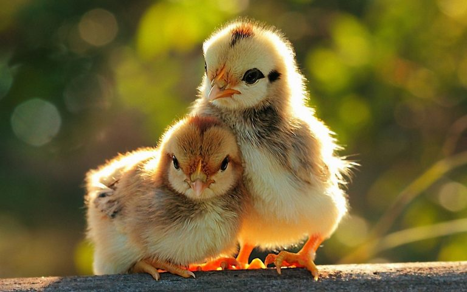
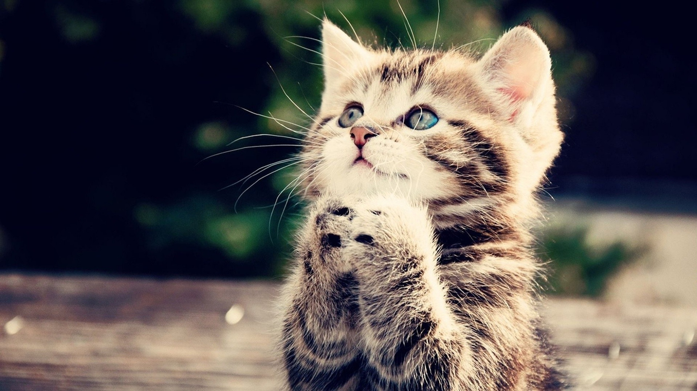
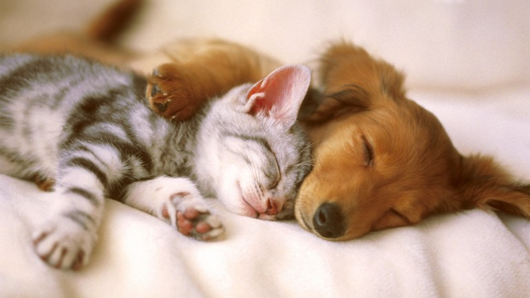
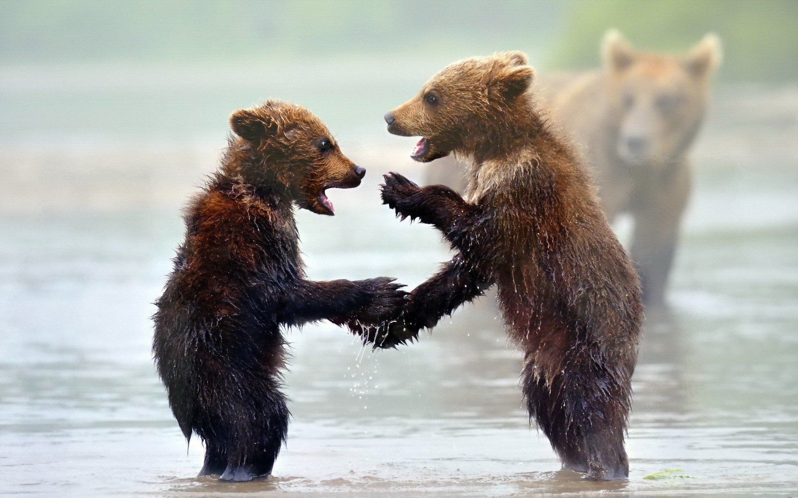

NUESTROS SERVICIOS
MEDICINA PREVENTIVA

Los servicios de medicina preventiva veterinaria pueden incluir consultas
regulares con un veterinario, exámenes físicos completos, pruebas de laboratorio para detectar
enfermedades, vacunaciones y tratamientos para prevenir enfermedades transmitidas por parásitos.
También se pueden incluir consejos sobre la alimentación y el ejercicio adecuados para su
mascota, así como programas de entrenamiento y socialización para ayudar a mantener su bienestar
emocional y físico.
EXÓTICOS

Nuestro servicio veterinario de exóticos ofrece atención médica de alta
calidad para una amplia gama de animales exóticos, incluyendo reptiles, aves, roedores y
mamíferos pequeños. Contamos con un equipo de veterinarios altamente capacitados y
experimentados en el cuidado de animales exóticos y utilizamos las últimas técnicas y
tecnologías para garantizar un trato eficaz y ético a cada paciente. Ofrecemos una amplia gama
de servicios, desde consultas regulares hasta procedimientos médicos complejos, y trabajamos de
cerca con cada propietario de animal para garantizar que sus necesidades y preocupaciones sean
atendidas adecuadamente. ¡Visítenos hoy y vea por qué somos el hogar de la atención médica de
alta calidad para su animal exótico!
RADIOLOGÍA
Nuestro servicio de radiología veterinaria ofrece imágenes detalladas y
precisas para ayudar a los veterinarios a diagnosticar y tratar una amplia gama de afecciones en
animales. Contamos con tecnología de última generación, incluyendo equipos de radiología digital
y de rayos X, y un equipo de radiólogos altamente capacitados y experimentados que trabajan de
la mano con los veterinarios para garantizar una atención óptima para cada paciente. Ofrecemos
imágenes claras y precisas de los huesos, órganos internos y otras estructuras importantes del
animal, lo que nos permite detectar afecciones temprano y planificar un tratamiento eficaz.
¡Visítenos hoy para descubrir cómo podemos ayudar a su animal a obtener una atención médica de
alta calidad!
CIRUJIA
Nuestro servicio de cirugía veterinaria ofrece procedimientos quirúrgicos
avanzados y eficaces para ayudar a los animales a recuperarse de afecciones y lesiones. Contamos
con un equipo de cirujanos altamente capacitados y experimentados que utilizan las últimas
técnicas y tecnologías para garantizar una atención médica de alta calidad. Ofrecemos una amplia
gama de procedimientos, incluyendo cirugía de huesos, órganos internos y tejidos blandos, y
trabajamos de cerca con cada propietario de animal para garantizar una recuperación eficaz y sin
complicaciones. ¡Visítenos hoy para descubrir cómo podemos ayudar a su animal a obtener la mejor
atención quirúrgica posible!
OBSTETRICIA
Nuestro servicio de obstetricia veterinaria ofrece atención prenatal y de
parto de alta calidad para las madres y los recién nacidos. Contamos con un equipo de
veterinarios altamente capacitados y experimentados en el cuidado de las madres y los bebés
animales, y utilizamos las últimas técnicas y tecnologías para garantizar un parto seguro y sin
complicaciones. Ofrecemos una amplia gama de servicios, incluyendo consultas regulares,
monitoreo del embarazo y parto, y cuidados neonatales. Trabajamos de cerca con cada propietario
de animal para garantizar que sus necesidades y preocupaciones sean atendidas adecuadamente.
¡Visítenos hoy para descubrir cómo podemos ayudar a su animal durante esta etapa importante de
su vida!
VACUNACIÓN
Nuestro servicio de vacunación veterinaria brinda protección a los
animales contra una amplia variedad de enfermedades y enfermedades contagiosas. Contamos con un
equipo de veterinarios altamente capacitados y experimentados que trabajan de cerca con cada
propietario de animal para determinar la mejor planificación de vacunación para su mascota.
Ofrecemos una amplia gama de vacunas, incluyendo aquellas para enfermedades como la
parvovirosis, la moquillo, la rabia, y muchas más. Además, trabajamos de cerca con cada
propietario para garantizar que su mascota reciba un seguimiento regular y una atención
adecuada. ¡Visítenos hoy para proteger a su mascota contra las enfermedades y mantenerla
saludable por mucho tiempo!